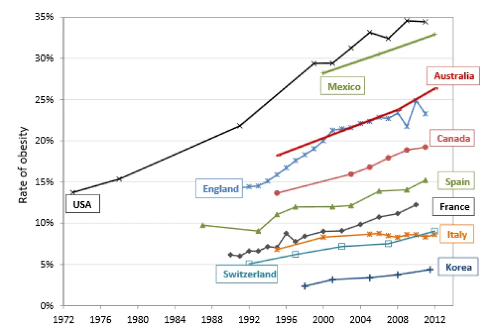
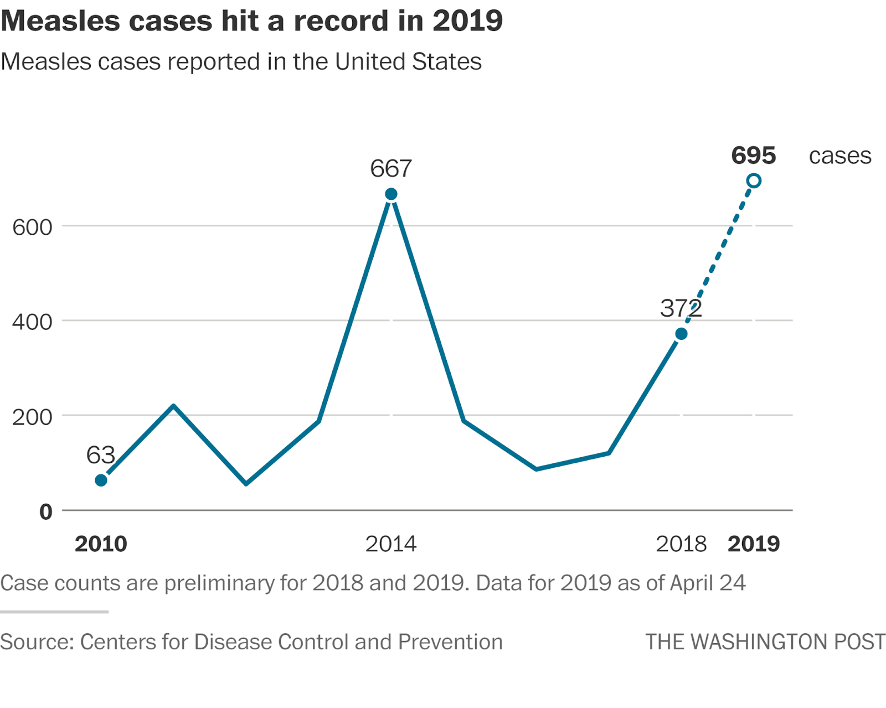
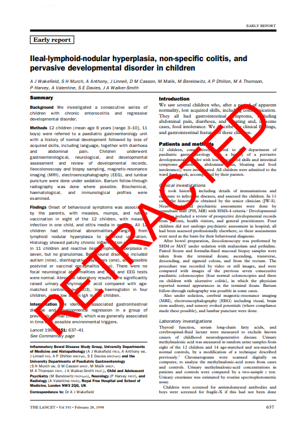

An extremely long-running challenge in public health is the difficulty of promoting proper nutrition in a way that is effective and acceptable to the general population. This is a pressing concern for a few reasons; most notably, improper nutrition (be it undernutrition, obesity, or micronutrient deficiency), is very strongly correlated with negative health outcomes, including type 2 diabetes, some forms of cardiovascular disease, certain types of cancer, and osteoarthritis, among others.[70] For the government, additional concerns are also significant, including the cost of improper nutrition to the health care system; estimates have placed the cost of obesity alone to the health care system at between 4.6 and 7.1 billion Canadian dollars.[70] When accounted for alongside other nutrition-related diseases, as well as the significant societal costs of excess death and productivity loss, the societal cost of improper nutrition is very difficult to measure but can be assumed to be extremely high. With that being said, however, the topic of nutrition policy has very little research into it. The field of public health in general is, of course, chronically underfunded; however, literature covering policy options for improving nutrition is unusually sparse for an issue of such immediate cost to institutions and society.
However, in the existing literature, there is some agreement on what makes effective public policy for nutrition. Unfortunately, the general agreement tends not to agree with the policies most commonly undertaken by governments, most likely because the interventions that are least effective also tend to be the most palatable to the public and the food industry - and thus require the least political capital - such as communications campaigns. There are a number of challenges to the establishment of effective public policy on nutrition, many of which are relatively intractable under our current systems of economy and political power.
One of the primary challenges to effective public policy in this area is the simple fact that people often like things that aren’t good for them, and resist change that might make those things harder to access. In addition, citizens in liberal democracies have a tendency to be very attached to the concept of freedom, and strongly resist public policy that is viewed as coercive, no matter how well-founded it may be.[76] Another very important challenge in this area is the influence of lobbyists in the food industry; food industry lobbying is very powerful, especially relating to nutrition policy.[73] (A slightly less diplomatic way of expressing that concept is to say that politicians don't tend to support policies that would harm the food industry becase the food industry frequently hands them large sacks with dollar signs scrawled on the side). In addition, as the food industry employs many people across Canada, politicians have the additional incentive to avoid harming the industry and causing job losses. However, the food industry, while a significant stakeholder when it comes to nutrition policy, has a fairly clear conflict of interest; their fiduciary duty to stakeholders means they are arguably legally required to act in the interests of making as much money as possible.[79] Therefore, they clearly do not have the best interests of Canadians in mind. A decent comparison would be allowing tobacco companies to spend millions of dollars lobbying against cigarette and vaping regulations - which we in fact do continue to allow as well.[83, 84]
With that in mind, let’s have a look at a few examples of nutrition policy that could be implemented by a hypothetical government, and examine their effectiveness and the challenges that our hypothetical government may face when implementing such strategies. We’ll cover them in order from (in my opinion) least to most coercive.
The first strategy is also the most common; understandably, since it’s the one with the least barrier to entry. This is public health communications campaigns like the Canadian Food Guide and the Canadian Healthy Eating Strategy (though the latter includes other strategies).[77] This is often championed through the school system, for two primary reasons. The first is because changes to the curriculum are cheap, compared to advertising; and the second is that small children are malleable. If you can convince the children to eat more healthily, odds are pretty good that that habit will stick around to adulthood. Strengths of such a policy more broadly are primarily in palatability; since it’s the least coercive of the reasonable options, it’s very likely to be accepted by the general population and by food industry lobbying groups.[81] In addition, if effective, they can prompt the food industry to refocus on healthier foods, if consumers take the advice on board and start buying healthier foods. However, the downsides are many. These campaigns are very costly and have shown limited effectiveness, considering they have been attempted globally for decades and rates of obesity and other nutrition-related diseases continue to rise.[70] Considering the extremely mixed evidence for their consistent effectiveness, they can perhaps be considered a useful tool, but only when combined with other interventions that are more borne out by the evidence.
 A graph showing rates of obesity among OECD countries.[80]
The next candidate for our hypothetical country is food labeling standards. Canada has implemented this strategy quite extensively as well, as evidenced by the food labels on the backs of most of what we buy nowadays. This strategy can be, in a sense, thought of as an extension of the last strategy, as it relates to communication with the customer to try to encourage them to make healthier choices by giving them more information and education about how to eat well. This approach has a few strengths, including incentivizing the industry to reduce levels of potentially harmful ingredients in food such as sodium, trans fat, and sugar.[81] However, it relies on the consumer to be motivated enough to bother reading and understanding label information, and evidence is mixed on whether it actually significantly affects consumer behavior. Once again, it is a valuable tool; especially for those particularly motivated to eat healthily or those who need to avoid eating too much of certain nutrients, such as pregnant people and those with some diseases.[81]
The next strategy I’d like to cover is the use of financial incentives and disincentives applied by the government. These could come in the form of soda or junk food taxes, subsidies for fruits and vegetables, or agricultural incentives to increase production. These have a number of strengths, including the fact that cost plays a major role in peoples’ purchasing decisions; of course, something that is less expensive is going to be more attractive, and if the cost of something increases, consumers are likely to look for substitute goods. In addition, lowering the cost of healthy options makes it significantly easier for low-income Canadians to get their hands on healthy foods, as healthy alternatives are often unable to compete with cheaper and more plentiful processed foods.[81] However, this approach also comes with significant disadvantages. First and foremost is its cost - if improperly balanced, incentives can cost significant amounts to the taxpayer, as the government has to pay for subsidies (though that saving is passed on to the consumer). The other side of that coin, however, is that too many disincentives with too few incentives can raise the price of food, causing prices to rise for the consumer; this has the double effect of worsening food insecurity and being incredibly unpopular. In addition, this approach is often strongly disfavored by the food industry, as it is viewed as costly government interference in the free market, and thus it is typically significantly lobbied against.[81] In addition, it can be unpopular with consumers, making it politically challenging. However, when properly balanced, this strategy has been demonstrated to have beneficial effects on consumers’ purchasing behavior.[69]
Lastly, our hypothetical government could consider food marketing standards. These typically consist of restrictions on how and when certain food products can be marketed, and are typically geared towards reducing the marketing of high-sugar and -sodium foods to children.[81] This is primarily because children are particularly susceptible to food marketing, as they are largely unable to psychologically differentiate between advertising and regular programming. In addition, as previously discussed, attitudes formed in childhood tend to remain strong for extended periods of time.[81] This approach is supported by many health-related organizations, including the World Health Organization.[72] It has the advantage of being low-cost, as the government doesn’t need to do much, save for passing legislation and enforcing it. In addition, this approach has shown some evidence of effectiveness in the past,[75] though research is relatively limited. However, this approach is extremely strongly opposed by the food and advertising industries, as it stands to lose them massive amounts of money. Additionally, there are concerns about the coerciveness of this approach, and questions about whether it’s the government’s role to govern what people should and shouldn’t see, especially if the regulations aren’t confined to only children.[75]
Marketing of unhealthy foods is often directed towards children.
In the end, nutrition is a very complicated topic, and one that’s tough to talk about. Despite its significant health impacts, it’s a far-away problem for many, as most of us don’t spend our lives thinking about heart disease whenever we break into a burger. That being said - maybe we should? There are significant societal and individual harms associated with poor nutrition, and the current dearth of literature and research on the topic isn’t making it any easier to find solutions that work for as many people as possible. Perhaps it’s time to start thinking not just about the way the food we eat affects us, but how we, as a society, can work to improve our system of nutrition for everyone.
The last one was a bit glum, so I’m glad I found myself a topic I could put a hopeful spin on. That being said, thanks for reading! I’ll see you next time (if there is a next time),
Luca.
How Andrew Wakefield Caused a Vaccine Scare for Money
5th of January
Luca Donais
On the 28th of February, 1998, Andrew Wakefield published an early report in the Lancet, a prestigious medical journal, claiming a link between the MMR vaccine, a new bowel disease, and autism. This report, shared with a room full of British journalists at a press conference shortly after its publication,[61] sparked intense debate in the UK at the time, sparking the modern anti-vaccine movement - first in the UK, then around the world. However, the paper has some issues, of which much has been made since its publication. In addition to the issues with the paper, there are also issues with the author - Wakefield was mired in a minefield of ethical, legal, and financial entanglements, ultimately leading to his being struck off from the UK General Medical Council register[67], having his medical license stripped away, and being disgraced in (most of) the public eye.
All that being said, for most, this paper has now faded from memory. Many of us have a vague recollection of the movement being based on one discredited and retracted paper, and some may even know who wrote it, but for the most part it is no longer a major cultural artifact. Those for whom it continues to be, however—including Wakefield himself, who continues to wage his antivax crusade in the United States, having been publicly humiliated in the UK[59]—continue to snub vaccination and spread their ideas, driving vaccination rates downwards. This, not coincidentally, has coincided with a significant rise in cases of dangerous infectious diseases like measles.[66] However, this is not the whole story. This saga is far more interesting than it has any right to be—because simply knowing Wakefield’s report as a paper that was wrong and retracted diminishes it greatly. There is so much more to the dumpsterfire that is this paper than can be expressed in such a simple explanation, and I am so excited to explain why.
 More measles is bad, or so it has been explained to me.
I’m not going to linger too long on what is presented in the paper itself; not because it’s not interesting and rife with inaccuracies in its own right, but rather because the motivations and incentives surrounding its publication tell a far better story. However, it’s worth mentioning, leading into a discussion of its context, that the paper itself is nonsense. Details given by parents of at least two of the anonymized children who participated in the study align with none of the records in the paper Three of the nine children who were reported to have regressive autism did not have autism diagnoses at all, and only one of them “clearly had regressive autism.”[61] Many of the conclusions surrounding autism in the paper are framed as repetition of the parents opinions: for instance, “Onset of behavioural symptoms was associated, by the parents, with measles, mumps, and rubella vaccination in eight of the 12 children [...].”[68] There are far more issues to be found in the paper, but as that is not the focus of this post, we will have to move on.
 The study is so retracted that it's physically hard to read.
That leads us to an important question, however. What would drive someone to do this? Wakefield was a surgeon and researcher[61] before all of this—he went to medical school—so of course he would have known, at the very least, that sweeping conclusions should not be drawn from a pilot study with such a small sample size. So then why would he go forward with it, going so far as to stage a press conference, ensuring that his findings would be plastered across the media and the public consciousness for decades to come?
The answer, as it often is, is money. Wakefield was mired in several financial entanglements surrounding the MMR vaccine scare, none of which he was eager to disclose. The first is his relationship with an attorney named Richard Barr, who paid him an undisclosed £150 (adjusted for inflation, almost 450 Canadian dollars) per hour, plus expenses, for his research.[61] In the two years Wakefield was on Barr’s payroll, he gained £435 643—more than 1.2 million Canadian dollars today.[61] Why would Barr pay such a ludicrous amount of money? He was preparing for a class-action lawsuit against MMR manufacturers on behalf of parents of autistic children—a lawsuit that would have been extremely profitable to him personally.[61]
It is worth noting Wakefield did not initially come out against vaccines in general; he only came out against the combined MMR vaccine, advocating for the use of monovalent (separate) measles, mumps, and rubella vaccines.[62] This was an odd stance to take, since his argument was that measles virus could gather in the gut, causing a bowel disorder that he called autistic enterocolitis (AE), that progressed to autism. He gave no explanation as to why a single vaccine would be any different.[61] However, we can infer his motivations from his behavior, as shortly before publishing his research, he filed patents both for testing kits for AE and a monovalent measles vaccine.[62] Both of these patents stood to make him huge sums of money if his research was accurate—or at least, if he could convince enough people that it was. He also became director of several companies, including Immunospecifics Biotechnologies Ltd and Carmel Healthcare Ltd, which would play parts in these ventures.[62]
Wakefield was already pitching himself and these businesses to investors. In a 35 page “private and confidential” prospectus—obtained by a journalist—whose goal was to raise £700 000 (~$1.9 million today) from investors, he claimed “It is estimated that by year 3, income from this testing could be about £3,300,000 rising to about £28,000,000 (~$9 million to ~$79 million) as diagnostic testing in support of therapeutic regimes come on stream.”[63] In a separate document, titled “Inventor/school/investor meeting 1.”, he predicted an annual turnover in Britain and America of £72.5 million (~$205 million) for testing kits for AE. “In view of the unique services offered by the Company and its technology, particularly for the molecular diagnostic,” it is written in the document, “the assays can command premium prices.”[62] None of these conflicts of interest were reported to the Lancet, the journal that published his report, and they were a major reason for his being struck off from the UK General Medical Council (GMC) register in 2010, following the longest fitness to practice hearing in the organization’s history.
The UK General Medical Council Logo
To delve into his financial entanglements leaves aside his ethical ones, however. There are too many to list here, so as a taster: at a speech to the Mind Institute in California, Wakefield described one of his son’s birthday parties, at which he claims—to audience laughter—that he lined up the children (32 of them, aged between 4 and 9), and offered them £5 each for their blood.[60, 64] That is to say, he gave children money in exchange for their blood so that he could use it in scientific research. This was obviously not cleared by an ethics committee, and was deeply unethical on its face. He claimed that when he did this, two children fainted and one threw up over his mother. When questioned about this during his GMC hearing, he claimed that those details had been made up; though, predictably, admitting to being a liar did little to ingratiate them to him.[64]
“And (NAME) burst into tears. Ruined his birthday party. But people said to me, Andrew, look, you know, you can’t do this, people, children won’t come back to you. [laughter]. I said you’re wrong, I said: ‘Listen, we live in a market economy. Next year they’ll want ten pounds!'”
—Wakefield, at a speech to the Mind Institute in California[60]
This one turned out darker than I expected, but important. Thank you for reading, and as always, I'll see you next time,
Luca.
Biotech Ethics
29th of November, 2022
Luca Donais
Hi there! It's been a while. I've been hard at work on something big, new, and fancy, which you can find here! I decided to go rather overboard, mostly because I was bored on the instructional support days (though it ended up taking way longer than those two days - whoopsie). This has, of course, delayed work on the last research notes post about pulse oximetry - that is still in the works, and should (in theory) show up soon.
This newest post is about ethics in biotechnology, a sticky subject with great importance in the world today. In it, I cover in some depth the ethical issues involved with both human genetic editing and human genetic modification. At around 3300 words, it's one of the longest things I've ever written; if I had to guess, maybe third or fourth. It was a bit of an endeavor to put together, but I found it completely fascinating all the way through. Even now, there are more arguments, points, and modifications that continue to come to mind, and I'm having to restrain myself from muddling my point any further by adding more content.
All that is a long-winded way of saying that I really enjoyed putting this together, and I really hope you enjoy reading it!
See you next time,
Luca.
P.S. If you're curious, the source code for this website can be found on github, here. The specific files for this post can be found under the biotech-ethics folder - the .html files are the main content of the post, and the .js and .css files which are in the src subfolder of biotech-ethics control styling and interactive behaviours.
Research Notes 2: Pulse Oximeter Function and Flaws
17th of October, 2022
Luca Donais
To be more precise from the last research notes, pulse oximeters are sensors that use light to measure the concentration of oxyhemoglobin (hemoglobin that is oxygenated) in the blood, as compared to deoxyhemoglobin (hemoglobin that is deoxygenated).[14] In principle, that is not very difficult to do; Beer-Lambert‚Äôs law, a formula for determining the absorbance of a mixture of solute and solvent (in this case, hemoglobin in blood) to a given wavelength of light, can be rearranged to solve for the concentration (C) of a given solute within a solvent, given the light path length (d), a measure of the distance that light travels, which is different from the physical distance that the light travels due to refraction[15]; the absorbance (ùõº) of the solution, or the quantity of light that is absorbed by the solution; and the extinction coefficient (ùúñ) of the solute, which is the light absorption of the solute at a given wavelength.[14]
This, however, is not enough to determine blood oxygen saturation (SaO2). Beer-Lambert’s law will determine the concentration of oxyhemoglobin within the volume of blood contained within the finger, but that is unhelpful, as the figure that is important in this case is the proportion of oxyhemoglobin as compared to all hemoglobin in the blood.[14] Therefore, our pulse oximeter will have to use two lights at different wavelengths, repeating Beer-Lambert’s law for each; one being to determine the concentration of oxyhemoglobin in the blood, the other being to determine the concentration of deoxyhemoglobin in the blood. Following that, it’s a simple task of dividing total hemoglobin (Hb + O2Hb) by oxygenated hemoglobin (O2Hb) and then multiplying the result by 100 to obtain a human-readable percentage, as in the formula shown below[14] (SpO2 being the SaO2 reading returned by the oximeter).
The reason this works is that oxyhemoglobin has a slightly different absorption spectrum than deoxyhemoglobin.[18] In layman’s terms, this means that it has a slightly different color; though nothing nearly as drastic as the popular perception that deoxygenated blood is blue. This difference is illustrated on the graph below. The red line represents the absorption spectrum of oxyhemoglobin (HbO2), and the blue represents the absorption spectrum of deoxyhemoglobin (Hb). On the lower end of the spectrum, around the 660 nm wavelength of light that is typically used, which is visible red light, deoxyhemoglobin absorbs much more light. However, on the higher end of the scale, around the 940 nm wavelength, which is infrared light, oxyhemoglobin absorbs much more light. This allows us to effectively isolate the types of hemoglobin from each other by using wavelengths of light on either end of the absorption spectrum.
A graph of the absorption spectra of oxyhemoglobin and deoxyhemoglobin in the near-infrared band of light.
However, we are once again not finished. The important reading is arterial oxygen saturation, since veins are completely expected to contain nearly all deoxygenated blood.[22] Therefore, not only does the oximeter have to isolate the types of hemoglobin from each other, it also has to isolate the parts of the reading that come from arteries from those that come from veins. This is accomplished by the fact that arteries pulsate with the heartbeat, while veins (by and large) do not.[21] Therefore, the device can isolate the parts of the reading which are pulsating and only use those[22] - this is where the “pulse” part of pulse oximeter comes from. A side effect of this method is that pulse oximeters, by their nature, also measure heart rate.
Despite its incredibly clever design, pulse oximeters do have a few flaws, most notably in cases in which they simply will not give accurate results. These are in cases of carbon monoxide poisoning and of methemoglobinemia. Carbon monoxide poisoning causes issues because carbon monoxide (CO) binds readily to hemoglobin, creating carboxyhemoglobin, which has a very similar emissions spectrum to oxyhemoglobin at the 660 nm where it is typically measured. This means that CO can effectively mask its presence to the oximeter, presenting as normal oxygen and giving a dangerously misleading impression of the reading.[14, 16] The other misleading result that pulse oximeters tend to give is in patients with a type of anemia called methemoglobinemia. Methemoglobin is a form of hemoglobin that cannot carry oxygen, meaning that blood full of methemoglobin will not be able to carry oxygen to the body’s tissues. This is, of course, very dangerous. However, because of methemoglobin’s substantial absorption spectrum on both the 940 and 660 nm wavelengths of light used in most traditional pulse oximeters, when it is in concentrations at or above about 30% it causes the oximeter to incorrectly read near 85% regardless of the patient’s true saturation.[14, 16, 17, 20]
A graph of the absorption spectra of oxyhemoglobin, deoxyhemoglobin, carboxyhemoglobin, and methemoglobin in the near-infrared band of light.
There exist oximeters which get around these issues by using more wavelengths of light; with more reference points, in some cases as many as 8,[16] it becomes possible to isolate methemoglobin and carboxyhemoglobin in the reading and overcome these limitations. However, methemoglobinemia is very rare and carbon monoxide poisoning is only a risk in very specific circumstances; for instance, if someone presents to a hospital emergency room, there is little point to screening them for carbon monoxide poisoning, since being away from the source of the carbon monoxide and in fresh air will in almost all circumstances cause their symptoms to dissipate. For that reason, most pulse oximeters in use today continue to have these limitations.
That's all for now. I'll be back at some point with yet another dive into pulse oximetry, though hopefully a bit less dense this time.
See you next time,
Luca.
Research Notes 1: Intro to the Research Notes Format and Pulse Oximeters
15th of October, 2022
Luca Donais
If you’ve ever been to a hospital emergency room, you’ve probably had one of these little doodads clipped onto your finger. As a child, I ended up in the hospital quite a lot, and was never quite sure what they were for. At the time, I never bothered to ask; but having been back in the hospital a few times in the last year or so, my childhood curiosity came back to me. This time though, I had the advantage of the internet and the ability to read patent filings. And also the lack of self-respect required to be willing to read very dense patent filings with graphs that look like this.[13] Joy!
A graph from a 1988 patent filing for a pulse oximeter.
To google it was, then. Cursory research told me that these are called pulse oximeters, and that they are sensors that measure the oxygen saturation in your blood.[14] That threw me for a loop a little bit. Blood lives inside the body, and so to measure most things about it, you need to remove some and analyze it in a lab. However, pulse oximeters dispense with all that unpleasantness, giving an at-a-glance view of respiratory system function within seconds. That is an incredible tool, but also seems to break just about all of the rules. How is it possible for that to work?
Well, I’m going to deal with that next time. This post is an introduction to the “Research Notes” format, which will be a little shorter and less formal, and will be more focused on diving into topics that interest me or that are relevant to coursework. It will be a place for me to organize my thoughts and dump some sources, as well as a place to talk about things that interest me!
See you next time,
Luca.
California Bans Sales of Fossil-Fuel-Burning Cars by 2035
12th of October, 2022
Luca Donais
Today, I read an article by Naveena Sadasivam in Grist Magazine titled “It’s official: California is phasing out gas-powered cars by 2035”[8]. The article was fascinating, and it brought up a number of interesting policy questions around health, climate, and other major issues in the world today. The policy is built on an executive order[4] passed by California governor Gavin Newsom. To be quite honest, as a serious piece of policy, I find the executive order and what has been built around it rather lackluster. While it is true that electric vehicles (EVs) are an important tool in combating climate change, they are not in and of themselves a solution. There are a whole raft of environmental, social, and health issues that EVs are either not equipped to address, or that they will actively worsen.
My biggest gripe with this policy is that the solution remains car-centric, with little recognition of the very real harms that personal automobiles cause to individuals and society. Cars are an extremely inefficient mode of transportation, both in terms of space efficiency within cities[6] and in terms of energy efficiency[11], as compared to high-occupancy vehicles like buses and especially trains. In addition, public transportation has shown benefits in increasing social mobility[1], increasing the general health of those who take it through increased physical activity, and thus, reducing healthcare costs to society[9], and other benefits. In addition, public transit is also significantly safer than personal cars. Per-kilometer, you’re about 17 times more likely to die in a car than on a train, and about 100 times more likely to die in a car than on an airplane. In the US, about 80 people die in cars every day, all in service of a mode of transit that is less efficient and more dangerous than the alternatives.[10]
A tesla after a crash.
There are also environmental concerns around EVs that should not be dismissed. While their environmental benefit, by taking gas-powered vehicles off the road and thus removing emissions, is clear, so is their environmental detriment. The mining of the various materials needed to manufacture electric cars, particularly lithium and cobalt, is environmentally ruinous. Lithium mining alone requires vast amounts of water; one proposed mine in the United States is expected to use billions of gallons of it — 14 356 liters per minute, some of which may remain contaminated for as many as 300 years[5]. The mines also create enormous quantities of chemical waste and destroy animal habitats, all at great expense to taxpayers in the form of mining subsidies and grants.
A lithium mine.
With all this talk of environmental and urban policy, we’ve largely ignored the other major topic of this blog, which is health. The article correctly points out that there are major health benefits to reducing greenhouse gas emissions and smog in cities, which contribute significantly to various respiratory and circulatory illnesses like asthma and heart disease[8, 12]. However, there are some hidden assumptions in this assessment that I believe are worth interrogating.
Mining for cobalt, an essential component in EV production, happens mostly in the Democratic Republic of the Congo (DRC), which produces about 60% of the world’s cobalt[3]. For context, the DRC is a country with about 3% of Canada’s GDP (despite having well over twice our population), and about 0.24% of the United States’ GDP. The mining of cobalt is horrible for the environment, and almost as bad for the health of the miners. In an ironic twist, it produces significant and toxic air pollution, which can cause asthma and pneumonia, among other respiratory issues. Some particles emitted in cobalt mining are radioactive or cancer-causing, and have been known to cause cancer, vision problems, and thyroid problems[3]. It also has wider social impacts; cobalt mining in the DRC has been linked to increased violence, substance abuse, food and water insecurity, loss of communal land, farmland, and homes, mental health challenges, and other detrimental impacts.[7] While the health benefits of reducing pollution are self-evidently good things, this policy and others focused on electric vehicles simply export our health and social issues into places where people are too stricken with poverty to argue, in service of reducing the climate guilt of those who are already wealthy.
In the end, this is probably a step in the right direction. However, there are a million better ways to step in this direction, many of which are less counterproductive to the policy’s stated goals. Like building a train. I’d even settle for some buses. Please.